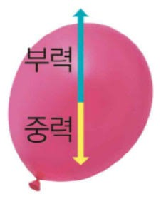
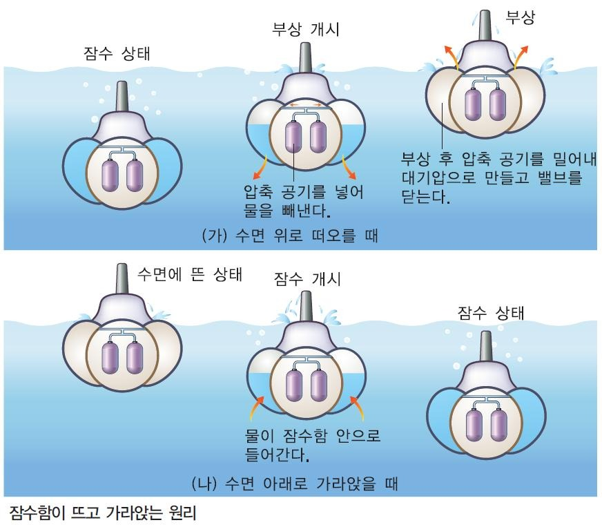
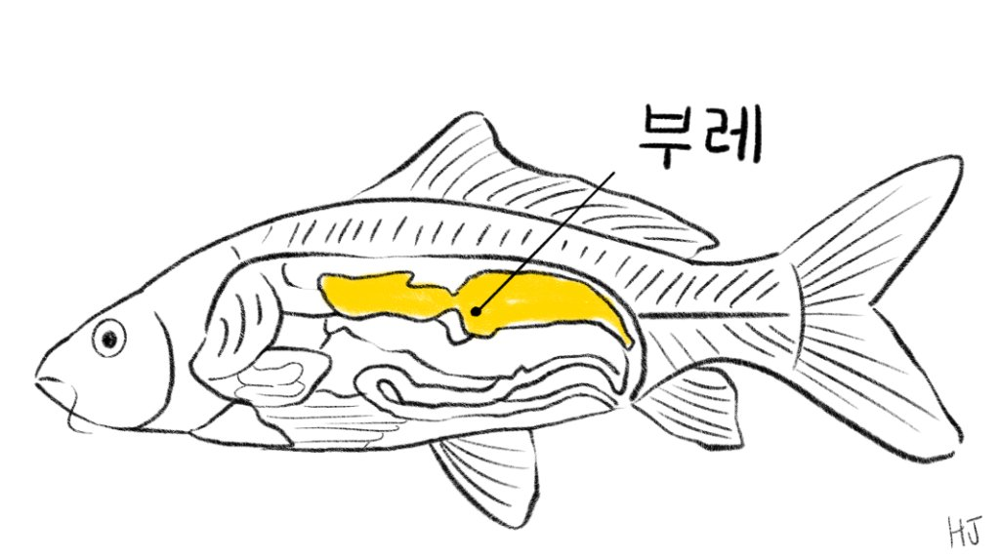
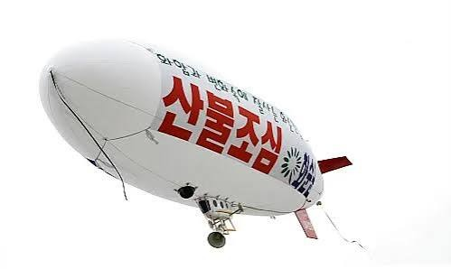

교과서 핵심 원리 탐구
부력은 항상 중력과 반대인 위쪽 방향으로 작용하며, 물체가 밀어낸 유체의 무게만큼 물체를 떠받쳐 줍니다.
📋 교과서 탐구 과정 (클릭 시 사진 연동)
순서대로 물을 넣어보세요흡착판을 용수철 양 끝에 고정한 다음 한쪽에 스타이로폼 구를 붙인다.
흡착판의 다른 쪽을 비커의 바닥 중앙에 붙여 떨어지지 않게 고정한다.
스타이로폼 구가 물에 잠길 때까지 물을 부어 용수철의 길이 변화를 관찰한다.


헬륨풍선은 밀도가 작아 부력이 외력(중력)보다 커서 위로 떠오르고, 입으로 분 풍선은 부력보다 외력(중력)이 커서 아래로 가라앉습니다.
📊 힘 벡터 정밀 분석
- • 부력 > 외력(중력): 위쪽으로 떠오름 ⬆️
- • 부력 = 외력(중력): 가만히 떠서 정지 평형 ⚖️
- • 부력 < 외력(중력): 아래쪽으로 가라앉음 ⬇️
물속에서 부력 측정하기 교과서 탐구 실험
잠긴 추의 개수(부피)를 늘려가며 용수철저울 측정값과 부력의 정비례 관계를 탐구합니다.


공기 중에서 추 3개의 총 무게는 3.00 N입니다. 이제 물속에 추를 하나씩 담가보세요.
📋 실험 측정 결과 자동 기록표
단위: 뉴턴(N)| 단계 | 잠긴 추 개수 | 중력 W (일정) | 저울 측정값 | 작용하는 부력 |
|---|---|---|---|---|
| 담그기 전 | 0 개 | 3.00 N | 3.00 N | 0.00 N |
| 1개 잠김 (가) | 1 개 | 3.00 N | - | - |
| 2개 잠김 (나) | 2 개 | 3.00 N | - | - |
| 3개 잠김 (다) | 3 개 | 3.00 N | - | - |
📈 잠긴 추 개수(부피)와 힘의 관계 그래프
막대를 담그기 전입니다. 공기 중 막대의 총 무게는 3.00 N이며 부력은 0.00 N입니다. 슬라이더를 올려 막대를 물에 담가보세요.
📋 잠긴 깊이(부피)별 실시간 측정 데이터표
단면적: 10 cm² | 전체길이: 10 cm| 잠긴 깊이 | 잠긴 부피 | 중력 W | 저울 측정값 | 작용 부력 |
|---|---|---|---|---|
| 0.0 cm (공기중) | 0.0 cm³ | 3.00 N | 3.00 N | 0.00 N |
| 2.5 cm (1/4) | 25.0 cm³ | 3.00 N | - | - |
| 5.0 cm (절반) | 50.0 cm³ | 3.00 N | - | - |
| 7.5 cm (3/4) | 75.0 cm³ | 3.00 N | - | - |
| 10.0 cm (완전침수) | 100.0 cm³ | 3.00 N | - | - |
| 12.0 cm (수심깊이) | 100.0 cm³ (일정) | 3.00 N | - | - |
📈 잠긴 깊이(부피)와 힘의 실시간 연속 그래프
추의 개수 실험만 접하면 '추의 개수에 비례한다'고 오해하기 쉽지만, 이 연속 막대 실험처럼 물체가 하나여도 물속에 잠긴 부피(길이)가 연속적으로 커지면 부력도 매끄러운 직선으로 정비례하여 증가합니다! (완전 침수 후에는 수심이 더 깊어져도 부력이 일정함)
잠수함의 원리
부피 고정, 자체 무게(중력)를 조절

물고기 부레의 원리
무게 고정, 몸의 체적(부력)을 조절

⚖️ 잠수함 vs 물고기 과학 비교 요약
부피(FB) = 일정, 무게(W) = 가변
• 물 주입 ➔ W > FB ➔ 잠항(하강)
• 공기 주입 ➔ W < FB ➔ 부상(상승)
무게(W) = 일정, 부피(FB) = 가변
• 부레 수축 ➔ FB < W ➔ 하강
• 부레 팽창 ➔ FB > W ➔ 상승
비행선의 원리
헬륨 기낭 + 밸로넷(공기주머니) 조절

열기구의 원리
버너 가열에 의한 내부 공기 밀도 감소
💡 열기구는 내부 공기를 뜨겁게 가열하면 공기 입자들의 운동이 활발해져 기구 밖으로 일부 빠져나갑니다. 그 결과 기구 안 공기의 질량이 줄어들어(밀도 감소) 부력이 중력보다 커져 솟아오릅니다.